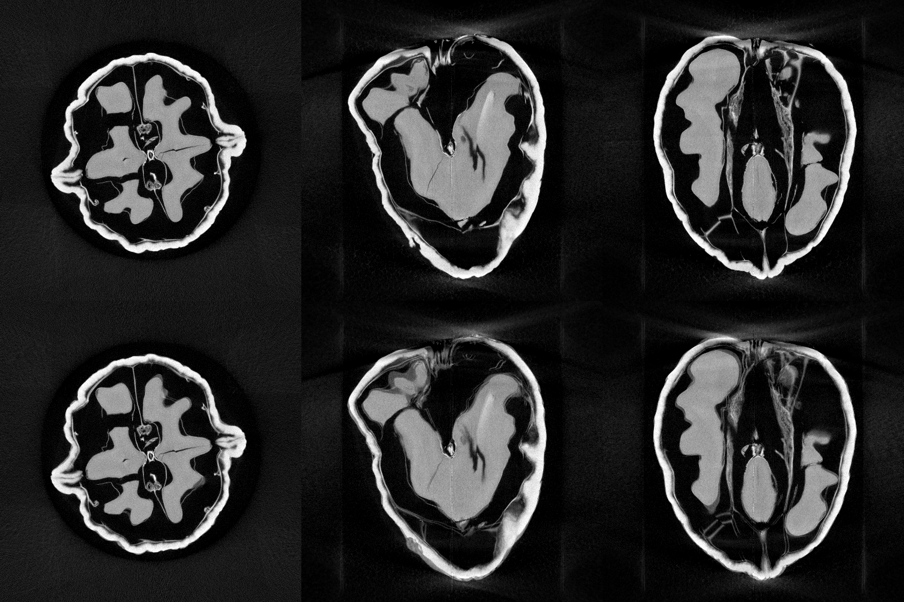
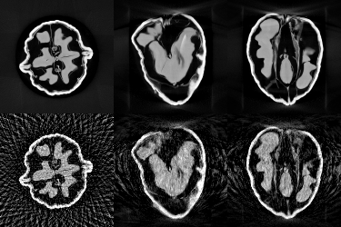
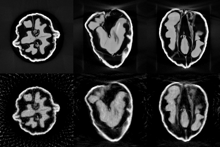
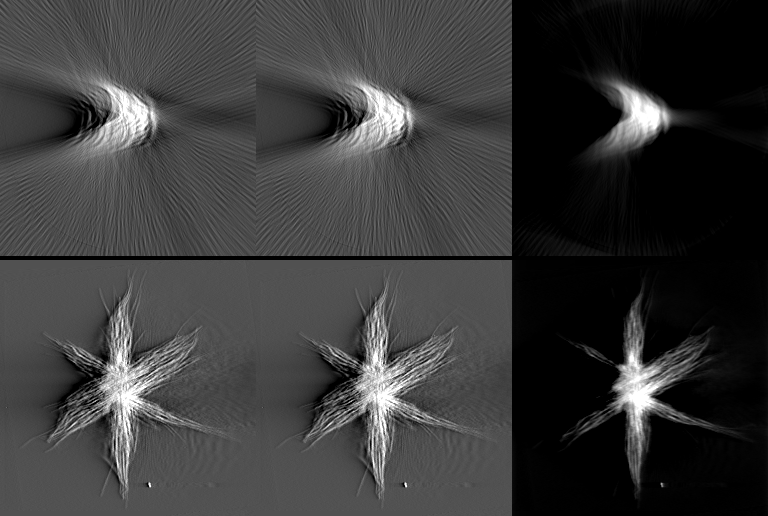

Cone-beam CT for Tomviz
Tomviz is an open source tool for reconstructing and visualising 3D tomography data. Today it reconstructs parallel-beam data: electron tomography and synchrotron CT. This project adds what lab and industrial X-ray CT scanners need, starting with cone-beam reconstruction, so that the same tool covers them too.
The work is being done in the open, as a series of pull requests to
OpenChemistry/tomviz.
This page explains what is being added, why, and how far it has got. Code:
the conebeam branch
of our Tomviz fork.
Why
Most lab and industrial CT scanners have a point X-ray source, so the rays fan out in a cone from the source to a flat detector. Everything in Tomviz assumes parallel rays. Reconstructing cone-beam data as if it were parallel is only approximately right in the central slice and gets worse away from it.
Before reconstruction, raw X-ray projections also need flat-field and dark-field correction and a logarithm, which Tomviz does not have either. Without these steps, scanner data cannot be reconstructed in Tomviz at all.
What is being added
New operators, in the Tomography menu
- Flat/Dark Field Correction and Intensity to Line Integrals: the standard first steps for raw X-ray projections, robust to dead pixels.
- Cone-Beam FDK: the standard analytic reconstruction
(Feldkamp, Davis and Kress), for circular scans, including short scans with
Parker weights, detector offsets and either rotation direction, or for any
geometry given as per-projection source and detector vectors (the ASTRA
cone_veclayout). - Cone-Beam SIRT: iterative reconstruction for the same geometries. It gives much better results than FDK from few or noisy projections, and can show the volume as it converges.
Shared projectors that run on any GPU, or none
Underneath is a new package, tomviz.projectors: geometry for
cone and parallel beams, a backprojector and a forward projector, written once
as a WebGPU compute shader and once as plain NumPy. The shader runs through the optional
wgpu package, which targets Vulkan, Metal and Direct3D 12, so it
is not tied to one GPU vendor; so far it has been tested on Vulkan. Without a
GPU it runs on a software driver (tested: Mesa lavapipe on Linux; WARP on
Windows should work the same way but is untested), and only then falls back
to NumPy.
That middle step matters more than expected. On 8 CPU threads and no GPU, the shader on lavapipe was 13 to 17 times faster than vectorised NumPy for backprojection and forward projection. NumPy writes a full-size temporary array for every operation, while the shader runs fused per element, compiled by LLVM to SIMD on every core.
Faster parallel-beam tools as a side effect
Because the projectors handle parallel beams too, existing electron tomography tools can use them. Weighted Back Projection and Generate Tilt Series now run on the shared projectors when a WebGPU adapter is available, and otherwise run their original code unchanged.
| Task (8 CPU threads, no GPU, lavapipe) | Before | Now |
|---|---|---|
| Weighted Back Projection, 512³, 71 tilts | 51 s | 12.2 s |
| Weighted Back Projection, bundled nanoparticle data | 6.45 s | 1.77 s |
| Generate Tilt Series, 256³, 71 tilts | 58.5 s | 3.5 s |
| SIRT, 60 iterations, 32×40×40 (vs NumPy) | 44 s | 1.4 s |
The new WBP matches the original to float precision inside the field of view. These are software-GPU numbers; a real GPU should be much faster, but that has not been measured yet.
Results on real data
Lab cone-beam CT: a walnut

With only 60 of the 1200 projections, FDK breaks up into streaks while SIRT still recovers the structure. In both images the top row is the full-data reference and the bottom row the reconstruction from 60 views, at 125³ voxels:


Electron tomography: the bundled nanoparticle

Status
| done | Flat/dark correction, −log, Cone-Beam FDK, Cone-Beam SIRT, shared projectors with WebGPU backend, faster WBP and Generate Tilt Series. 69 automated tests, including orientation checks against an analytic phantom and GPU-against-CPU agreement. |
| done | Linux .deb and AppImage packages for Tomviz, tested on Debian, Ubuntu and Rocky Linux, and on an AMD Radeon RX 9070 (branch). |
| in progress | Ring artifact removal. |
| not yet | Reconstruction timings on a real GPU; the new operators checked in the built application; continuous integration with lavapipe. |
| later | Readers for scanner projection formats (for example Zeiss TXRM, Nikon XTEK), helical and other non-circular scans in the GUI, TV regularisation. |
How it will go upstream
As small pull requests, each useful on its own and each with its own tests:
- Flat/dark field correction and the −log transform.
- The shared projectors (CPU) and Cone-Beam FDK.
- The WebGPU backend. This adds an optional dependency
(
wgpu), so we will open an issue to discuss it first. - Weighted Back Projection and Generate Tilt Series on the shared projectors.
- SIRT for cone and parallel beams.
- Ring artifact removal.
The packaging work goes to OpenChemistry/tomviz-packaging separately.